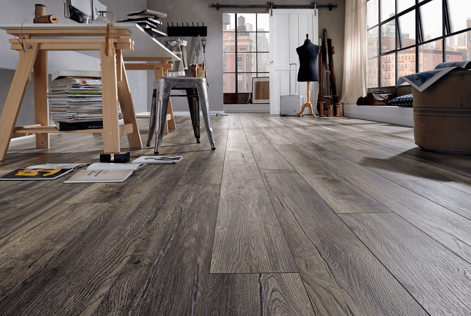

Los pisos de madera ofrecen una apariencia natural y cálida, añadiendo belleza y elegancia a cualquier espacio. Bien mantenidos, pueden durar décadas, resistiendo manchas y desgaste en áreas de alto tráfico. Aumentan el valor de una propiedad debido a su atractivo estético y durabilidad, atrayendo a potenciales compradores.
Son más fáciles de limpiar que las alfombras y no retienen alérgenos, mejorando la calidad del aire interior. Se adaptan a diversos entornos y pueden ser lijados y refinados para cambiar su apariencia con el tiempo. Son más costosos de instalar en comparación con otras opciones de revestimiento de suelos. Pueden dañarse con la humedad y el agua estancada, requiriendo limpieza inmediata y no son adecuados para áreas propensas a inundaciones. Requieren mantenimiento regular y pueden necesitar ser lijados y refinados cada varios años para eliminar arañazos.
¿Cómo se si es mi piso ideal?
Es una opción más económica en comparación con otros tipos de suelos. Ideal para proyectos con presupuestos ajustados. Se instala sobre una capa de espuma de polietileno, lo que facilita su instalación y reduce los costos de mano de obra.
Disponible en una amplia gama de diseños y colores, lo que permite adaptarse a diferentes estilos de decoración.Se limpia fácilmente con una aspiradora o un trapo húmedo, lo que lo hace ideal para hogares con mascotas y niños.Aunque duradero, puede dañarse con el tiempo y no puede ser lijado o restaurado como la madera real. La humedad excesiva puede causar dañosno se recomienda para áreas propensas a inundaciones o exposición constante al agua..
PISO FLOTANTE

PVC
¿Cómo se si es mi piso ideal?
Ideal para áreas húmedas como cocinas, baños y sótanos. Se puede instalar sobre casi cualquier superficie, incluyendo concreto, baldosas y madera contrachapada. Se limpia fácilmente con agua y jabón, y no requiere sellado ni encerado. Disponible en una amplia gama de colores y patrones que imitan la apariencia de la madera, la piedra y otros materiales. Resistente a las manchas, los arañazos y la decoloración, lo que lo hace adecuado para áreas de alto tráfico. Puede dañarse permanentemente si se expone a altas temperaturas, como brasas de cigarrillos o sartenes calientes. Puede ser más caro que otras opciones de suelo, aunque su durabilidad y bajo mantenimiento pueden compensar este costo inicial.
¿Cómo se si es mi piso ideal?
Ofrecen una apariencia natural y rústica, ideal para espacios al aire libre. Resistente a la intemperie y a la pudrición, lo que los hace adecuados para áreas exteriores. Se pueden instalar sobre cualquier superficie plana, incluyendo concreto, baldosas o grava. Requieren un mantenimiento mínimo, generalmente limpieza regular y ocasional sellado. Pueden ser más caros que otras opciones de pavimentación, especialmente los decks de madera dura. Los decks de madera natural necesitan ser sellados regularmente para mantener su resistencia a la intemperie y su apariencia. Necesitan ser instalados con un sistema de drenaje adecuado para evitar problemas de acumulación de agua.
.webp)